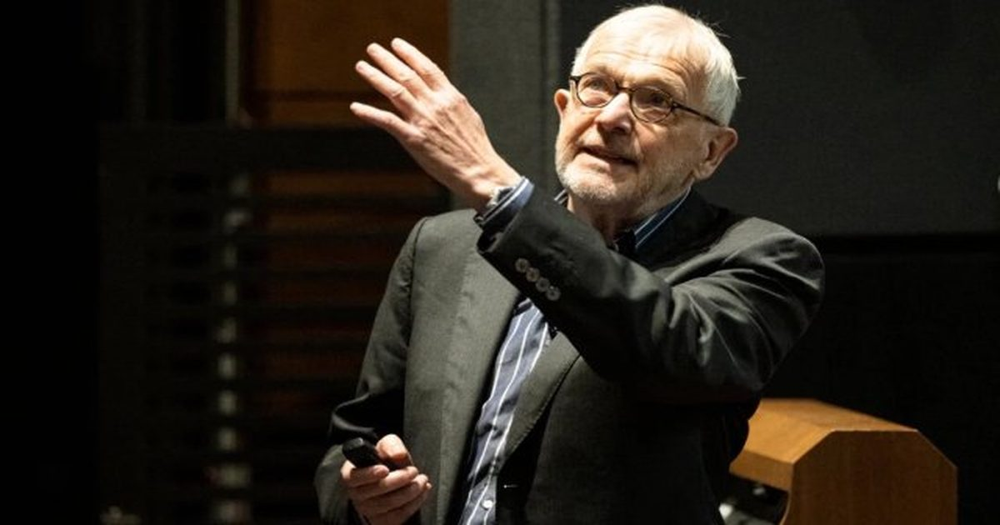

IceCube, высокоэнергетические нейтрино и Фрэнсис Халзен получили Нобелевскую премию по физике 2026 года
Существует целая Вселенная, и чем больше мы узнаем о ней такой, какая она есть на самом деле, тем больше становится наш потенциал для достижения великих целей как цивилизации, даже если путь от знания к улучшению человечества далеко не ясен.
Нобелевская премия была учреждена более 100 лет назад с явной целью наградить тех, чей труд приносит «наибольшую пользу человечеству» в ряде дисциплин, включая физику.